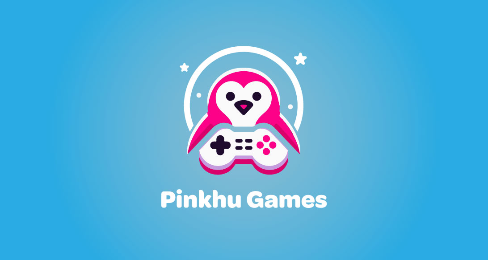
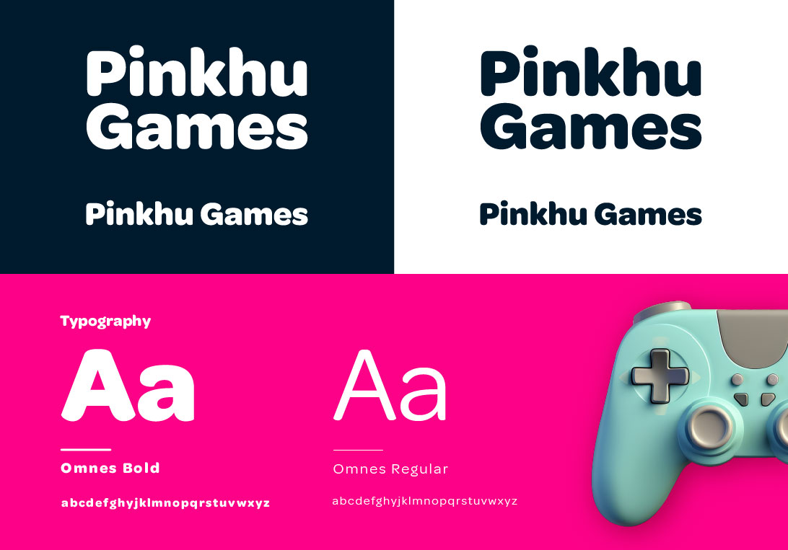
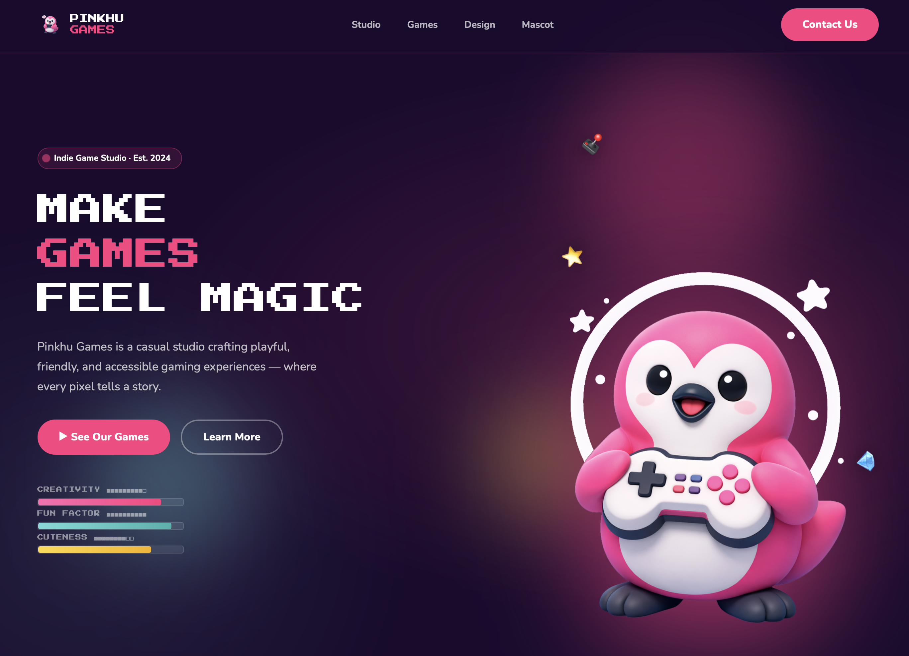
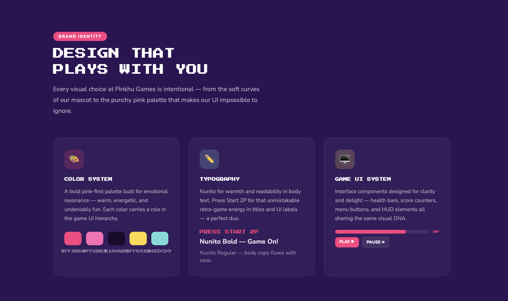
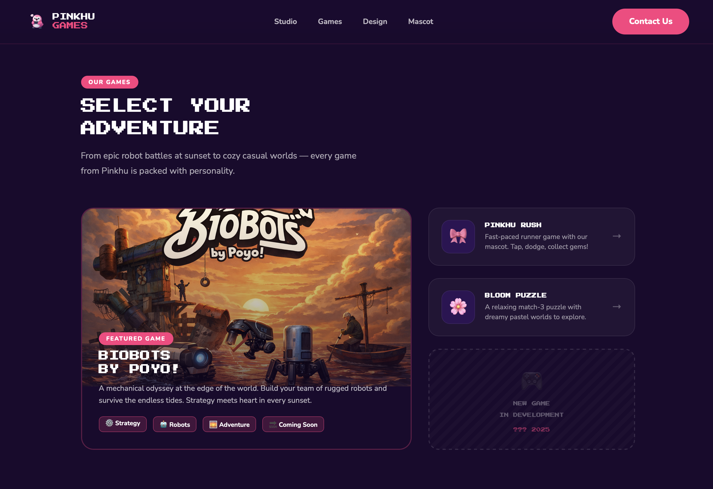

from scratch
identity + UI
audience
blank canvas
When building from scratch for a game studio, every decision is a foundation — the brand, the UI, and the in-game experience must all speak the same visual language.
Pinkhu Games — animated brand identity with mascot logo, playful motion and sky-blue palette
Defining a visual identity for a casual game studio
Pinkhu Games is a casual game studio focused on creating playful, friendly, and accessible gaming experiences. The challenge was to define a strong visual identity that could translate seamlessly into game UI elements, marketing assets, and future digital products.
I supported the project as a designer focused on brand definition and game UI foundations — working across visual identity, typography, color systems, and interface exploration.

Pinkhu Games — mascot logo and visual identity built around a playful, friendly character

Brand system — Omnes typeface, vibrant color palette and logo variations across dark and light backgrounds

Website hero — brand personality translated to the main landing experience with mascot, bold type and color

Design system in action — color tokens, typography hierarchy and game UI components applied across the product

Game catalog — brand language scaling from identity to interactive product pages with featured games and categories
Full visual identity defined from scratch — logo, color, type and mascot
Brand system that scales from marketing to in-game UI seamlessly
Game UI direction with clear hierarchy, friendly iconography and visual feedback
Consistent visual language across all studio touchpoints
Foundation ready for product expansion and future game titles